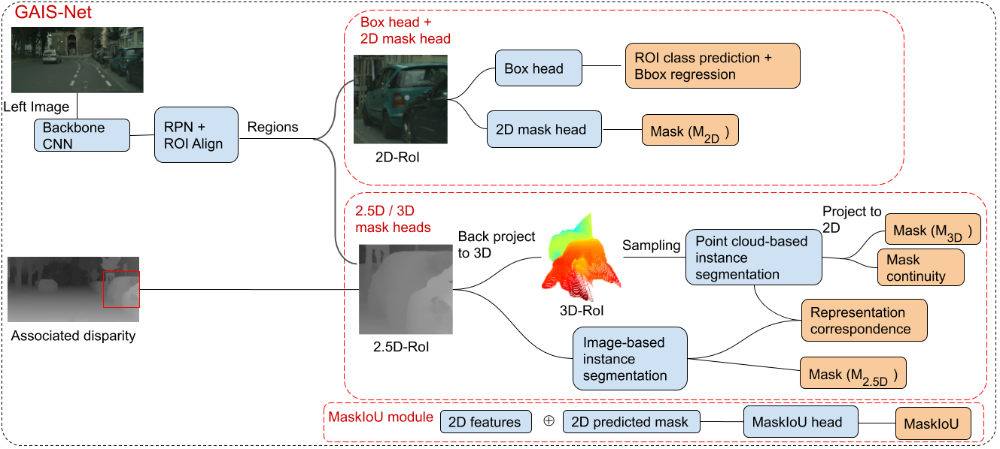
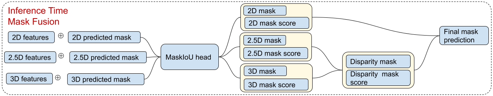
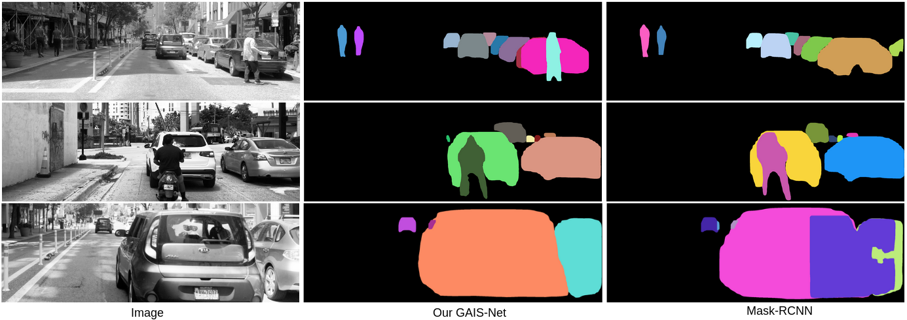

Authors: Cho-Ying Wu* Xiaoyuan Hu^, Michael Happold^, Qiangeng Xu*, Ulrich Neumann*
*University of Southern California ^Argo AI
Here describes our work Geometry-Aware Instance Segmentation with Disparity Maps* on CVPR 2020 Workshop of Scability in Autonomous Driving (WSAD). This work introduces a sensor fusion framework GAIS-Net which incorporates geometric information of disparity maps and images to perform outdoor instance segmentation on driving scenarios. To our knowledge, this is the first work to perform outdoor instance segementation combining information of both images and geometry. Our results attain state of the art compared with Mask-RCNN, Cascade Mask-RCNN, Hybird Task Cascade (HTC). We also collect a high-quality driving stereo (HQDS) dataset that enables highely accurate long range outdoor depth acquistion.
*This work is done during Cho-Ying Wu's internship at Argo AI.
Most previous works of outdoor instance segmentation for images only use color information. We explore a novel direction of sensor fusion to exploit stereo cameras. Geometric information from disparities helps separate overlapping objects of the same or different classes. Moreover, geometric information penalizes region proposals with unlikely 3D shapes thus suppressing false positive detections. Mask regression is based on 2D, 2.5D, and 3D ROI using the pseudo-lidar and image-based representations. These mask predictions are fused by a mask scoring process. However, public datasets only adopt stereo systems with shorter baseline and focal legnth, which limit measuring ranges of stereo cameras. We collect and utilize High-Quality Driving Stereo (HQDS) dataset, using much longer baseline and focal length with higher resolution. Our performance attains state of the art. The full paper is available here.
If you find this work useful in your research, please consider citing:
@inproceedings{wu2020Cvprw,
title={Geometry-Aware Instance Segmentation with Disparity Maps},
author={Wu, Cho-Ying and Hu, Xiaoyan and Happold, Michael and Xu, Qiangeng and Neumann, Ulrich},
booktitle={CVPR Workshop on Scability in Autonomous Driving},
year={2020}
}Training Process
 Pipeline of our GAIS-Net. Disparity maps are calculated using PSMNet from the left/right stereo frames. Based on Mask-RCNN, we introduce the disparity information at ROI heads. The representation aggregation approach of collecting regressed masks on 2D, 2.5D, and pseudo-3D is dones by each MaskHead. MaskIoU includes a mask scoring process to score the quality of each mask.
Testing
 We fuse the 2.5D mask and 3D mask first because they are from the same source. We then fuse the mask predictions from the image domain and disparity. Masks are linearly combined using their associated mask scores. Therefore, a mask with higher score, having a better mask shape, contributes to the final mask more.
 Left column shows stereo left images with histogram equalization to enhance contrast for better visualization. Middle and last column show Mask-RCNN and GAIS-Net results, respectively. Each instance has different colors. With the aid of geometric information, GAIS-Net can segment out the person from the overlapping area in the first row example. In the second row scenario, Mask-RCNN generates distorted mask for the smoking motorcyclist because of cigarette plume and in contrast GAIS-Net displays a more robust shape control capability.
Performance on HQDS. We compare our GAIS-Net with Mask-RCNN with different backbone.
Comparsion with related works on HQDS.
The codes are released here .